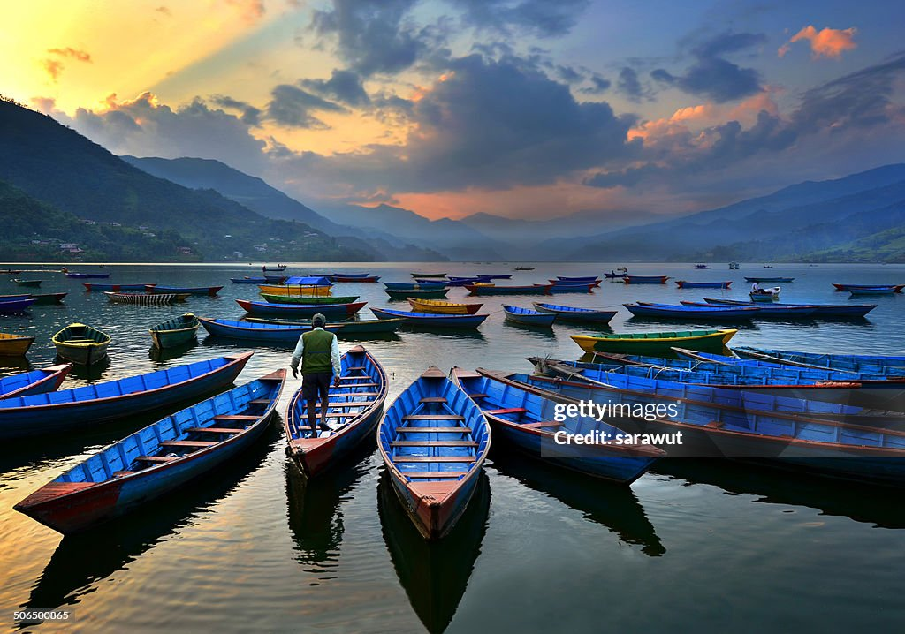

Phewa Lake, Phewa Tal or Fewa Lake (Nepali: फेवा ताल, [ˈpʰewa tal]) is a freshwater lake in Nepal formerly called Baidam Tal located in the south of the Pokhara Valley that includes Pokhara city and parts of Sarangkot and Kaskikot. [1] It is the second largest lake in Nepal and the largest in Gandaki Province after the Rara lake in comparison to Nepal's water bodies.[2] It is the most popular and most visited lake in Nepal. Phewa lake is located at an altitude of 742 m (2,434 ft) and covers an area of about 5.7 km2 (2.2 sq mi).[3] It has an average depth of about 8.6 m (28 ft) and a maximum depth of 24 m (79 ft).[4] The maximum water capacity of the lake is approximately 43,000,000 cubic metres (35,000 acre⋅ft).[5] The Annapurna range on the north is only about 28 km (linear distance) away[6] from the lake. The lake is also famous for the reflection of mount Machhapuchhre and other mountain peaks of the Annapurna and Dhaulagiri ranges on its surface.[7] The Tal Barahi Temple is situated on an island in the lake.[8] It is located 4 km from the city's centre Chipledhunga.
Paragliding in Pokhara is safer since the internationally certificated pilots are only allowed to fly in the sky. Pilots are much more experienced and take care of your safety and comfort. You can be carefree and enjoy the majestic views of Pokhara.